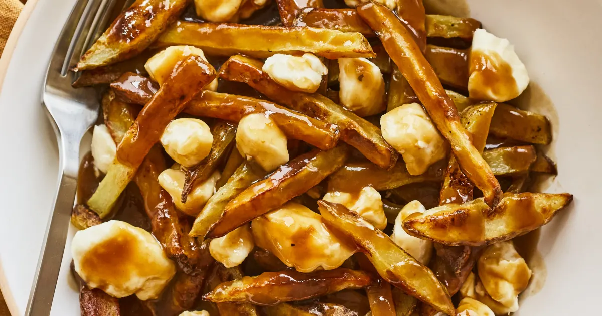

Poutine

Descriptions
This recipe is for a classic Quebec City-style poutine,
which is made with crispy French fries topped with hot gravy
and curds. The fries are fried in vegetable oil and then topped
with the gravy and curds before serving. A simple and delicious
dish that can be enjoyed as a main course or as a side dish.
Ingredients
- 4 cups of vegetable oil, for frying
- 4 cups of French fries
- 2 cups of gravy
- 2 cups of curds
Steps
- Heat the vegetable oil in a large pot or deep fryer to 350°F.
- Fry the French fries in batches until golden brown and crispy.
- Drain the fries on a paper towel-lined plate to remove excess oil.
- In a saucepan, heat the gravy until it is hot.
- Place the fries on a plate and top with the hot gravy and curds.
- Serve immediately and enjoy your Quebec City-style poutine!